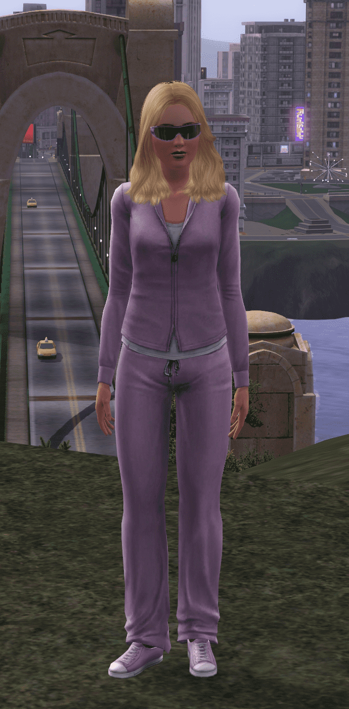

Hello! It's me, Kate!

Hello there! I'm a dedicated gamer of The Sims 3, and I've spent
countless hours immersed in the virtual world of my Sims. One of my
favorite aspects of the game is exploring the various cities and
neighborhoods it has to offer.
Out of all the towns available, I must say that Bridgeport has a
special place in my heart. The bustling urban cityscape, filled with
nightclubs, bars, and high-rise apartments, offers a unique and
vibrant experience for my Sims. The nightlife in Bridgeport is
unparalleled, and there's always something exciting happening, whether
it's a glamorous party at a penthouse or a jam-packed club.
I've had the pleasure of playing in all of the towns and
neighborhoods, each offering its own charm and gameplay opportunities.
From the rural setting of Riverview to the tropical paradise of Sunlit
Tides, I've enjoyed creating different stories and adventures in each
locale.
One of my greatest passions in The Sims 3 is building. Designing and
customizing homes, from cozy cottages to extravagant mansions, is
where I find the most joy. I love getting creative with architectural
details, interior decor, and landscaping. It's incredibly satisfying
to see my Sims living in the houses I've crafted with love and
attention to detail.
In terms of my Sims' careers, I'm particularly drawn to the
entertainment industry. The life of a performer in the Showtime
expansion pack has been a fascinating journey. Whether my Sim is a
singer, magician, or acrobat, the thrill of entertaining the masses
and climbing the career ladder is a fulfilling experience.
As for my Sims' ultimate life aim, it's all about achieving a
harmonious and fulfilling life. Whether it's building a loving family,
mastering various skills, or becoming a master of the arts, I strive
to help my Sims lead rich and meaningful lives. The open-ended nature
of The Sims 3 allows me to explore different life paths, and I find
joy in helping my Sims reach their individual goals and aspirations.
So, that's a bit about me as a Sims 3 gamer. I'm passionate about the
game's diverse cities, building, and guiding my Sims to success and
happiness in their virtual lives. It's a world where creativity knows
no bounds, and I love every moment of it.